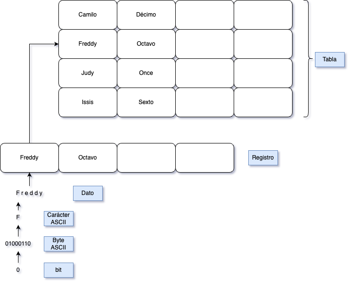
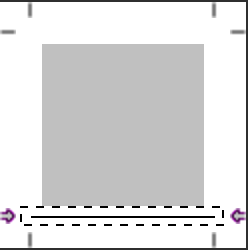
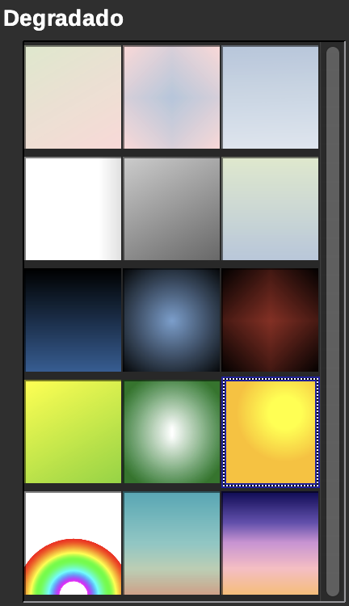

Guía 1013: Formato en LibreOffice Writer (P3)¶
|
|

Exploración Estructuración Actividad práctica Transferencia
Temática: Uso de formato de carácter, párrafo y estilo en LibreOffice Writer.
Objetivo de aprendizaje: Aplicar adecuadamente los formatos de carácter, párrafo y estilo en el software LibreOffice Writer.
Componente: Uso y apropiación de la Tecnología y la Informática.
Competencia: Genero propuestas innovadoras para el uso y aprovechamiento de productos tecnológicos.
Evidencia de aprendizaje: Utilizo adecuadamente herramientas informáticas para la búsqueda, organización, procesamiento, sistematización, comunicación y difusión de ideas.
Actividades desarrolladas en su totalidad.
Participación en clase.
Explicación clara de conceptos.
Argumentación de ideas.
Cumplimiento de las reglas del aula.
Mensaje del autor¶
“Esta guía didáctica ha sido diseñada para facilitar el aprendizaje práctico y efectivo del formato de documentos en LibreOffice Writer. El objetivo es que, a través de actividades claras y orientadas, los estudiantes desarrollen competencias en el manejo de herramientas digitales, promoviendo la autonomía y la creatividad en la elaboración de textos”.
—Camilo Fonseca
A00: Introducción (5%)¶
Exploración
Transcriba en su cuaderno el objetivo, las orientaciones curriculares y los criterios de evaluación de la presente guía.
Lea el mensaje del autor.
A01: LibreOffice Writer (5%)¶
Estructuración
Lea los siguientes conceptos:
Formato de texto¶

Barra de herramientas formato¶ |
La forma más productiva, eficiente y elegante para dar formato al texto del documento es mediante los estilos, entendidos como conjuntos de formatos.
Pero para poder aplicar, modificar o crear estilos es necesario conocer los diferentes formatos que podemos aplicar al tipo de letra, párrafos o listas de nuestro documento.
Por este motivo, es recomendable familiarizarnos con los diferentes formatos que podemos utilizar con el procesador de textos LibreOffice Writer y las diferentes maneras de aplicarlos.
Trabajando con estilos¶
 Jerarquía de estilos¶ |
{kind=link}
Con LibreOffice Writer podemos aplicar formatos directamente al texto del documento. Pero si trabajamos con documentos largos y estructurados como memorias, proyectos o informes, la aplicación directa de formatos es muy improductiva.
La solución está en trabajar con estilos. Los estilos son conjuntos de formatos agrupados bajo un nombre y gracias a ellos, podemos dotar a nuestros documentos de la estructura adecuada de títulos y subtítulos, crear índices automáticamente o numerar capítulos. Modificando un estilo podemos cambiar en cuatro clics la apariencia de un documento de decenas o cientos de páginas.
RECOMENDACIONES USO DE ESTILOS
Para el uso de estilos se recomienda lo siguiente:
Los colores de texto y fondo deben estar suficientemente contrastados.
El tamaño mínimo recomendable para la tipografía debe ser de 12 puntos. Nunca usar tipografías de tamaño inferior a 10 puntos.
Uso de tipografías sans serif (sin remate) habituales. Arial o Verdana son muy buenas elecciones.
Evitar el uso de variantes thin, light o narrow de las tipografías (variantes más estrechas de los tipos de letra).
Precaución con el uso de las negritas, cursivas o subrayados.
Evitar el uso de efectos de contorno o intermitencias.
Evitar el uso de características incompatibles con otros formatos de documento (sup_rayados, por ejemplo)
El interlineado simple no facilita la lectura; casi siempre será más apropiado un interlineado proporcional del 120% como mínimo.
Establecer un espaciado anterior y posterior al párrafo.
Evitar el uso de características incompatibles con otros formatos de documento (rellenos degradados o de imagen, por ejemplo)
Cuando se desea distribuir documentos de forma impresa o en formato PDF, tan sólo se necesita disponer de un documento bien estructurado y organizado. Para ello se tiene en cuenta otras configuraciones como el tamaño y formato del papel donde se imprimirá, los márgenes del documento, la orientación, los encabezados y pies que se deben repetir en todas las páginas o la numeración de las páginas.
A02: Taller (5%)¶
Estructuración
Responda las siguientes preguntas en su cuaderno:
¿Qué es dar formato a un documento?
¿Cuál es la forma más eficiente y productiva de dar formato a un texto?
¿Qué son los estilos?
Con 10 términos de las recomendaciones en el uso de estilos, en una hoja de cuaderno cree una sopa de letras.
A03: Formato de carácter 1.0 101 (5%)¶
Actividad práctica
EJECUTE el software LibreOffice Writer.
En la cabecera del documento, agregue la información de identificación con el título: FORMATO DE CARÁCTER 1.0
GUARDE el documento en su carpeta de evidencias del periodo actual con el nombre: G1013A03-formato_caracter_1.odt
AGREGUE el siguiente fragmento de texto al documento:
“La ofimática es el conjunto de aplicaciones y herramientas informáticas diseñadas para facilitar y mejorar las tareas relacionadas con la creación, edición, almacenamiento y distribución de información en el entorno de una oficina o empresa”.
En el documento, SELECCIONE el texto recién copiado y en el Menú superior PULSE: Formato > Carácter… para abrir la ventana Carácter.

Menú formato de carácter¶
En la ventana Carácter configure las siguientes opciones:

Menú Ventana formato de carácter¶
En la pestaña Tipo de letra configurar:
Tipo de letra: Liberation Serif
Estilo: Negrita Itálica
Tamaño: 12 pt
En la pestaña Efectos tipográficos configurar:
Color de letra: Verde claro 1
Suprayado: Punteado, Color: Azul
Tachado: Con /
Subrayado: Trazo, Color: Magenta
Mayusculación: Mayúsculas iniciales
Relieve: Sin
Marcar opción de Contorno
Marcar opción de Sombra
Desmarcar opción de Oculto
En la pestaña Bordes configurar:
En la sección Disposición de líneas configurar:
Definido por el usuario: Seleccionar bordes superior y derecho así:

En la sección Línea configurar:
En la sección Estilo de sombra configurar:
Posición: Proyectar sombra a la parte inferior derecha
Color: Lima
Pulsar el botón Aceptar
En su cuaderno:
En su cuaderno…
Responda las siguientes preguntas:
¿Que pasó con el texto que había pegado inicialmente?
Al momento de crear informes, memorias, cartas o proyectos ¿Qué se necesita para que el contenido tenga un buen formato?
Guarde los cambios y cierre el software LibreOffice Writer.
{kind=link}
A04: Formato de carácter 2.0 102 (5%)¶
Actividad práctica
DESCARGUE el siguiente archivo y guárdelo en su carpeta de evidencias:
G1013A04-practica_fuentes.odt Descargar
Abra el archivo: G1013A04-practica_fuentes.odt y en la cabecera del documento, agregue la información de identificación con el título: FORMATO DE CARÁCTER 2.0
¿Qué contiene el documento?
El documento tiene varios párrafos que especifican la configuración de formato de carácter que debe tener cada uno.
SELECCIONE cada párrafo y aplique la configuración indicada PULSANDO en el menú superior: Formato > carácter…
Advertencia
NO USE la barra de herramientas de formato!!!
Puede que algunas opciones no coincidan…
En su cuaderno…
En caso de que algunas opciones no coincidan (por ejemplo los colores), elegir la opción más cercana y en su cuaderno escribir las opciones que no coincidieron y cómo las reemplazó.
Después de aplicar todos los formatos a los párrafos, el documento debería tener el siguiente aspecto:
En su cuaderno:
En su cuaderno…
Responda la siguiente pregunta:
¿Cuál es la ventaja de aplicar formato de carácter por medio del menú superior frente a aplicar formato de carácter por medio de la barra de herramientas formato?
Guarde los cambios y luego cierre el software LibreOffice Writer.
{kind=link}
A05: Formato de carácter 3.0 101 (5%)¶
Actividad práctica
DESCARGUE el siguiente archivo y guárdelo en su carpeta de evidencias:
G1013A05-mitos.odt Descargar
Abra el archivo: G1013A05-mitos.odt y en la cabecera del documento, agregue la información de identificación con el título: FORMATO DE CARÁCTER 3.0
¿Que contiene el documento?
El documento contienen las descripciones de Dioses de la mitología griega. A los títulos: ADONIS, AFRODITA y AGON se les debe aplicar una configuración de formato de carácter.
Seleccione el título ADONIS y PULSE en el Menú superior > Formato > Carácter…
En la pestaña Resalte configurar:
Color: Verde claro 3
En la pestaña Bordes configurar:
En la sección Disposición de líneas configurar:
Preconfigs: Los cuatro bordes
En la sección Línea configurar:
Estilo: Sólido
Color: Azul
Grosor: Grueso 2.25 pt
En la sección Separación configurar:
0.50cm por cada lado (izquierda, derecha, superior e inferior)
En la sección Estilo de sombra configurar:
Posición: Abajo y a la derecha
Color: Azul claro 3
Aplique la misma configuración de formato de carácter a los títulos AFRODITA y AGÓN.
En cada párrafo, RESALTE la primera palabra con color amarillo.
Advertencia
Use el formato de carácter. No use la barra de herramientas formato.
Después de aplicar todos los formatos al texto, el documento debería tener el siguiente aspecto:
En su cuaderno:
En su cuaderno…
Responda las siguientes preguntas:
¿Que desventajas ha encontrado hasta el momento usando la herramienta de formato de carácter (Menú superior > Formato > Carácter…)?
¿Que pasaría si en vez de 3, hubiesen sido 300 títulos a los que era necesario configurar formato de carácter?
Guarde los cambios y cierre el software LibreOffice Writer.
{kind=link}
A06: Clonando formato 101 (5%)¶
Actividad práctica
DESCARGUE el siguiente archivo y guárdelo en su carpeta de evidencias:
G1013A06-enfermedades.odt Descargar
Abra el archivo: G1013A06-enfermedades.odt y en la cabecera del documento, agregue la información de identificación con el título: CLONANDO FORMATO
¿Qué contiene el documento?
En este documento se encuentra la descripción de unas enfermedades.
Es necesario dar formato a los títulos de las enfermedades.
Se debe aplicar un formato de carácter en el título Gota. Luego este formato será clonado en los demás títulos (Artrosis y Aftas).
SELECCIONE el título Gota y aplique las siguientes configuraciones de formato de carácter:
En la pestaña Tipo de letra configurar:
Familia: Verdana
Tamaño: 28 pt
Estilo: Negrita
En la pestaña Efectos tipográficos configurar:
En la sección Efectos configurar:
MARCAR la opción de contorno.
En la pestaña Resalte configurar:
Color: verde claro 4
En la pestaña Bordes configurar:
En la sección Disposición de líneas configurar:
Preconfigs: los cuatro bordes
En la sección Separación configurar:
0,20 cm por cada lado (izquierda, derecha, superior e inferior)
PULSAR el botón Aceptar.
El formato de carácter del título Gota debería quedar así:
Al párrafo de la descripción de la enfermedad Gota, APLICAR: tipo de letra: Tahoma y el tamaño de letra: 14pt (En este caso puede usar el formato de la barra de herramientas formato)
SELECCIONE el título Gota y en la barra de herramientas estándar, PULSE el botón Clonar formato dos veces para dejar la herramienta activa.
¿Qué esta pasando en el mouse?
El mouse ahora tendrá un ícono de un bote de pintura derramándose, esto quiere decir que cualquier palabra que seleccione, recibirá el formato previamente seleccionado.
Cuando termine de clonar formato, presione la tecla ESC.
COPIE el formato a los títulos de las enfermedades: Artrosis y Aftas. Cuando termine presione la tecla ESC.
En su cuaderno:
En su cuaderno…
Responda la siguiente pregunta:
¿Cómo la herramienta clonar formato puede ayudar a superar las desventajas al usar la herramienta: formato de carácter?
Guarde los cambios y cierre el software LibreOffice Writer.
{kind=link}
{kind=link}
A07: Formato de párrafo 103 (5%)¶
Actividad práctica
DESCARGUE el siguiente archivo y guárdelo en su carpeta de evidencias:
G1013A07-nueces.odt Descargar
Abra el archivo: G1013A07-nueces.odt y en la cabecera del documento, agregue la información de identificación con el título: FORMATO DE PÁRRAFO
¿Qué contiene el documento?
En este documento encontrará la descripción de algunas vitaminas presentes en las nueces. Por medio de la herramienta formato de párrafo el documento tendrá una mejor apariencia para el lector.
En la barra de herramientas estándar, PULSE el botón Alternar marcas de formato.
Una vez activó las marcas de formato, en su cuaderno describa que acabó de pasar en el documento.
¿Qué significan las marcas de formato?
Una marca (¶) significa un párrafo.
Un punto (.) significa un espacio.
Una flecha (→) significa una tabulación.
En su cuaderno:
En su cuaderno…
Responda la siguiente pregunta:
¿Cuántas marcas, puntos y flechas salieron en el documento?
Situar el cursor al final de la segunda marca (segundo párrafo) y en el menú superior, PULSE Formato > Párrafo… para abrir la ventana Párrafo
En la ventana Párrafo configure las siguientes opciones:
En la pestaña Sangrías y espaciado configurar:
En la sección Espaciado configurar:
Bajo el párrafo: 0,30 cm
En la sección Interlineado configurar:
Proporcional de 120%
PULSE el botón Aceptar
En su cuaderno:
En su cuaderno…
Describa que acabó de pasar en el documento.
SELECCIONE desde el principio del segundo párrafo hasta el final y aplique la siguiente configuración de formato de párrafo:
En la pestaña Sangrías y espaciado configurar:
En la sección Espaciado configurar:
Bajo el párrafo: 0,30 cm
En la sección Interlineado configurar:
Proporcional de 120%
PULSE el botón Aceptar
SELECCIONE el título “Las nueces contienen” y aplique la siguiente configuración de formato de párrafo:
En la pestaña Alineación configurar:
En la sección Opciones seleccionar Centro.
En la pestaña Área configurar:
Color: Amarillo
PULSE el botón Aceptar.
SELECCIONE el título “Las nueces contienen” y aplique la siguiente configuración de formato de carácter:
En la pestaña Tipo de letra configurar:
Familia: Liberation Sans
Tamaño: 16 pt
Estilo: Negrita
En la pestaña Efectos tipográficos configurar:
En la sección Color de letra configurar:
Color de letra: Púrpura
En la sección Decoración de texto configurar:
Subrayado: Sencillo
Color: Púrpura
En la sección Efectos configurar:
Marcar la opción Sombra.
PULSE el botón Aceptar.
SELECCIONE desde el principio del segundo párrafo hasta el final y aplique la siguiente configuración de formato de carácter:
En la pestaña Efectos tipográficos configurar:
En la sección Color de letra configurar:
Color de letra: Gris oscuro 2
PULSAR el botón Aceptar.
SELECCIONE desde el principio del segundo párrafo al penúltimo párrafo (no seleccione el último párrafo) y en el menú superior PULSE Formato > Numeración y bolos para abrir la ventana de Numeración y bolos y configure las siguientes opciones:
En la pestaña No ordenada configurar:
SELECCIONAR cualquier modelo.
PULSE el botón Aceptar.
En el documento SELECCIONE el último párrafo y aplique la siguiente configuración de Formato de párrafo:
En la pestaña de Sangría y espaciado configure:
En la sección Sangría configure:
Antes del texto: 4cm
Después del texto: 4cm
En la sección Espaciado configure:
Sobre el párrafo: 2cm
En la pestaña Alineación configure:
En la sección Opciones configure Centro.
En la pestaña Bordes configure:
En las sección Disposición de líneas configure:
Preconfigs: Los cuatro bordes
En la sección Separación configure:
0,20 cm en todos los lados
En la pestaña Área configurar:
Color: Gris claro 4.
PULSE el botón Aceptar.
Después de aplicar todas las configuraciones, el documento debería tener la siguiente apariencia:
En su cuaderno:
En su cuaderno…
Responda la siguiente pregunta:
¿Cuantas veces y en que pasos se usaron el formato de carácter, formato de párrafo y la numeración y bolos?
Guarde los cambios y cierre el software LibreOffice Writer.
{kind=link}
{kind=link}
{kind=link}
{kind=link}
A08: Sangría Francesa 101 (5%)¶
Actividad práctica
DESCARGUE el siguiente archivo y guárdelo en su carpeta de evidencias:
G1013A08-certificado.odt Descargar
Abra el archivo: G1013A08-certificado.odt y en la cabecera del documento, agregue la información de identificación con el título: SANGRÍA FRANCESA
¿Qué contiene el documento?
El documento muestra información relacionada con un certificado laboral.
Se debe configurar el documento para que el certificado tenga una mejor presentación.
La palabra “Certifica” debe estar en negrita (usar la barra de herramientas formato).
SELECCIONE todo el documento y aplique la siguiente configuración de formato de párrafo:
En la pestaña Sangrías y espaciado:
En la sección Espaciado configurar:
Bajo el párrafo: 0,40 cm
PULSE el botón Aceptar.
Al tercer párrafo APLIQUE el siguiente formato de párrafo:
En la pestaña Sangría y espaciado configurar:
En la sección Sangría configurar:
Antes del texto: 3,00 cm
Primer renglón: -3,00 cm (Esto es la sangría francesa)
PULSE el botón Aceptar.
Después de aplicar todas las configuraciones, el documento debería tener la siguiente apariencia:
En su cuaderno:
En su cuaderno…
Responda la siguiente pregunta:
¿Qué es una sangría francesa y explique en que otros tipos de documentos podría usarse?
GUARDE los cambios y cierre el software LibreOffice Writer.
{kind=link}
A09: Esquema numerado 102 (5%)¶
Actividad práctica
DESCARGUE el siguiente archivo y guárdelo en su carpeta de evidencias:
G1013A09-temario.odt Descargar
Abra el archivo: G1013A09-temario.odt y en la cabecera del documento, agregue la información de identificación con el título: ESQUEMA NUMERADO
¿Qué contiene el documento?
El documento muestra un contenido el cual no esta numerado. Es necesario aplicar esquemas numerados.
En la barra de herramientas estándar, PULSE: Alternar marcas de formato.
SELECCIONE todo el documento y aplique la siguiente configuración de formato de párrafo:
En la pestaña de Sangrías y espaciado configure:
En la sección de Espaciado configure:
Bajo el párrafo: 0.30 cm
PULSE el botón Aceptar.
SELECCIONE todo el documento y en el menú superior, PULSE Formato > Numeración y bolos.
En la pestaña de Esquema seleccione el siguiente:
Pulsar el botón Aceptar.
Situar el cursor al comienzo del párrafo 2. Generalidades y PULSE la tecla TAB.
En su cuaderno:
En su cuaderno…
Responda la siguiente pregunta:
¿Que pasó en el documento cuanto presionó la tecla TAB?
El título Generalidades aplique Tipo de letra: negrita
Aplicar TAB y negrita a los siguientes títulos:
Control de comunicaciones de la red.
Polling
Paso de testigo
Normas estándares para redes locales
Aplicar 2 veces TAB y negrita a los siguientes títulos:
Concepto de red local
Ventajas de redes locales
Gestores de una red local
Introducción
Protocolos
Protocolos de contienda
Contienda simple
Factores de evaluación del protocolo de paso de testigo
Aplicar 3 veces TAB a los títulos que no estén en negrita.
Después de aplicar todas las configuraciones, el documento debería tener la siguiente apariencia:
En su cuaderno:
En su cuaderno…
Responda la siguiente pregunta:
¿Cuales son los títulos de primer, segundo, tercer y cuarto nivel?
GUARDE los cambios y cierre el software LibreOffice Writer.
{kind=link}
{kind=link}
A10: Currículum de estilos 101 (5%)¶
Descargue el siguiente archivo y guárdelo en su carpeta de evidencias:
G1013A10-curriculum.odt Descargar
Abra el archivo: G1013A10-curriculum.odt y en la cabecera del documento, agregue la información de identificación con el título: FORMATO DE ESTILOS
¿Qué contiene el documento?
El documento muestra la hoja de vida de una persona. Sin embargo no es entendible.
Es necesario aplicar estilos para mejorar la apariencia del documento y así sea más entendible.
Seleccione los títulos: Formación Reglada, Formación No Reglada y Experiencia Laboral.
¿Cómo seleccionar varios títulos al mismo tiempo?
Para seleccionar varios títulos al mismo tiempo, mantenga PULSADA la tecla CTRL y selecciona los títulos uno por uno.
En la barra de herramientas lateral, PULSE el ícono Estilos.
En la herramienta de estilos encontrará 6 herramientas para aplicar formato de estilo al documento. PULSE el icono de Estilo de párrafos.
Observe la Jerarquía de estilos de párrafo y localice el estilo de nombre: Título.
¿Qué es el estilo de título?
El estilo Título, a su vez tiene mas sub-estilos. Si no aparecen, PULSAR clic sobre la flecha apuntando hacia abajo a la izquierda del nombre del estilo.
ANTES DE CONTINUAR, ASEGÚRESE que los títulos del documento previamente seleccionados siguen estando seleccionados!!!
Pulsar doble clic sobre el sub-estilo Título 1. (Usted acaba de aplicar un estilo en el documento). Responda las siguientes preguntas en su cuaderno:
¿Qué acabo de pasar en el documento cuando aplicó el estilo?
¿Qué es mejor: aplicar formato de párrafo o aplicar formato de estilo y por qué?
Seleccione todos los párrafos del documento (NO SELECCIONE los títulos) y en la Jerarquía de estilos de párrafo, APLIQUE el estilo: Cuerpo de texto.
En la herramienta: Jerarquía de estilos de párrafo, SELECCIONE nuevamente el estilo Cuerpo de texto y PULSE el botón derecho del mouse para abrir un menú contextual. En el menú contextual de Cuerpo de texto, seleccione la opción: Editar estilo…
¿Qué es el menú contextual?
Un menú contextual es una lista de opciones que aparece cuando PULSA clic derecho (o un gesto similar) en un elemento en la pantalla de una computadora o dispositivo.
Esto permite realizar acciones específicas relacionadas con ese elemento, como copiar, pegar, eliminar, o acceder a propiedades.

En la ventana Estilo de párrafo: Cuerpo de texto, configurar las siguientes opciones:
En la pestaña Tipo de letra configurar:
Familia: Times New Roman
Tamaño: 14pt
En la pestaña Esquema y lista configurar:
Nivel de esquema: Nivel 1
Estilo de esquema: Bolo -
PULSAR el botón Aceptar.
En la Jerarquía de estilos de párrafo, IDENTIFIQUE el estilo: Título 1 y en su menú contextual PULSE Editar estilo…
En la ventana: Estilo de párrafo: Título 1 configure lo siguiente:
En la pestaña Tipo de letra configurar:
Familia: Arial
Estilo: Negrita itálica
En la pestaña Efectos tipográficos configurar:
Color de letra: Azul
En la pestaña Bordes configurar:
En la sección Disposición de líneas:
Definido por el usuario: Agregar línea inferior

En la sección Línea:
Color: Azul
Grosor: Grueso (2,25pt)
En la sección Estilo de sombra:
Posición: Proyectar sombra a la parte superior izquierda
PULSE el botón Aceptar.
En su cuaderno:
En su cuaderno…
Responda la siguiente pregunta:
¿Cuál es la diferencia entre editar el estilo de párrafo de Cuerpo de texto y editar el estilo de párrafo de Título 1?
Con las configuraciones aplicadas hasta el momento, el documento debería tener la siguiente apariencia:
Guarde los cambios y cierre el software LibreOffice Writer.
{kind=link}
{kind=link}
{kind=link}
{kind=link}
{kind=link}
{kind=link}
{kind=link}
A11: Estilo personalizado 101 (5%)¶
DESCARGUE el siguiente archivo y guárdelo en su carpeta de evidencias:
G1013A11-estilo_personalizado.odt Descargar
Abra el archivo: G1013A11-estilo_personalizado.odt y en la cabecera del documento, agregue la información de identificación con el título: ESTILO PERSONALIZADO
En la Jerarquía de estilos de párrafo, IDENTIFIQUE el estilo: Estilo de párrafo predeterminado y en su menú contextual, PULSE la opción: Nuevo…
En la ventana: Estilo de párrafo: Sin Título1, configure las siguiente opciones:
En la pestaña Generales configurar:
En la sección Estilo:
Nombre: Mi estilo
En la pestaña Sangrías y espaciado configurar:
En la sección Sangría:
Antes de texto: 5,00cm
Después del texto: 5,00cm
En la sección Espaciado:
Sobre el párrafo: 1,00cm
Bajo el párrafo: 1,00cm
En la sección Interlineado:
1,5 renglones
En la pestaña Alineación configurar:
En la sección Opciones:
Centro
En la pestaña Tipo de letra configurar:
Familia: Arial
Estilo: Itálica
Tamaño: 11pt
En la pestaña Bordes configurar:
En la sección Disposición de líneas:
Preconfigs: Los cuatro bordes
En la sección Separación:
0,20cm en Izquierda, Derecha, Superior e Inferior.
En la pestaña Área configurar:
PULSAR el botón Degradado.
En la sección Degradado seleccionar: Luz solar

En la sección Opciones:
Tipo: Axial
PULSE el botón Aceptar.
Al final del texto, AGREGUE el siguiente párrafo:
“De necesitar referencias, solicítelas directamente al candidato. Gracias”.
SELECCIONE el texto que acabó de agregar y APLIQUE el estilo: mi estilo.
Con las configuración aplicada hasta el momento, el texto debería tener la siguiente apariencia:
En su cuaderno:
En su cuaderno…
Responda la siguiente pregunta:
¿Para que casos es útil configurar un estilo personalizado en LibreOffice Writer?
GUARDE los cambios y cierre el software LibreOffice Writer.
{kind=link}
{kind=link}
A12: Presentación de evidencias (40%)¶
Transferencia
¿Cómo se evalúa?
Los estudiantes presentan lo siguiente:
Carpeta de evidencias con todos los archivos editados en la presente guía. (Los archivos deben estar abiertos).
Cuaderno con las actividades desarrolladas.
El docente realiza unas preguntas para verificación de conocimientos.
El estudiante debe demostrar de forma práctica sus conocimientos en el uso de LibreOffice Writer.